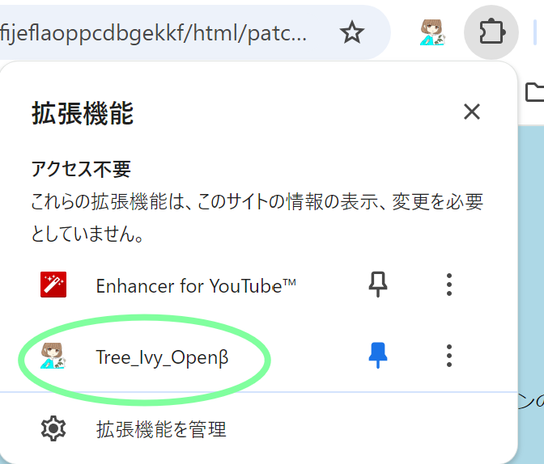

パッチノート
バージョン 1.3
このバージョンでは、以下の変更が行われました:
- iportalのスプリットビュー対応
キャリアカフェとスタログに戻るリンクがどういうわけか遷移しない問題を確認しています
どうもhttpsとhttpが混在してるとiframeが読み込みを拒否するらしいです
少なくとも出てきてるエラーはそういってる、解消方法はわかんにゃい
とりあえず、キャリアカフェとスタログのリンクは新しいタブで開くようにしました
- スプリットビューのページ用の戻る、閉じるボタン追加
- スプリットビューでダイジェストのエラーから科目ページに戻るボタンを押すと強制遷移する問題の修正
公式discordについて
使い方がわからない機能の質問や意見、バグ報告とアプデ告知などに
chrome右上のパズルアイコンの拡張機能一覧からTreeIvyをクリックし、右上にあるアイコンから参加できます
またはこちら
メニューのアクセス方法
画像のパズルアイコンの一覧からTree Ivyを選択

作者の独り言
イースターエッグ一個混ぜてみたよ。探してみてね